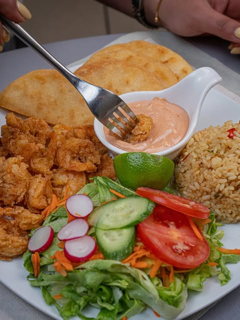
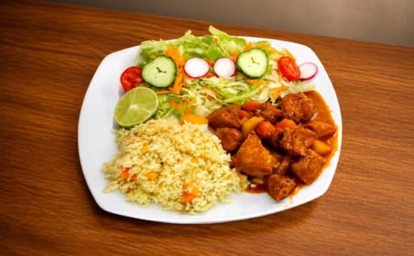
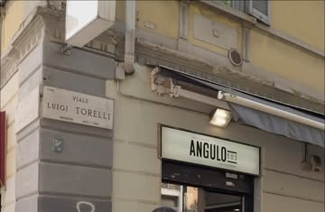

PEQUEÑO SABOR. GRAN VIAJE.
ANGULO 503
RESTAURANTE SALVADOREÑO — MILANO
EL SALVADOR
INCONTRA
MILANO.
Una cucina fatta di tradizione, sapori intensi e convivialità. Ingredienti veri, ricette tramandate, piatti pensati per essere condivisi a tavola — un piccolo angolo di El Salvador che incontra la vita di Milano.
UNA TAVOLA
CHE RACCONTA
IL SALVADOR.
Ogni piatto nasce da una tradizione gastronomica autentica, portata a Milano senza perdere la sua identità. Sapori decisi, ingredienti curati e l'idea che una buona tavola sia soprattutto un momento condiviso.
SAPORI DA SCOPRIRE.

DENTRO ANGULO 503.
NON È SOLO CENA.
SAPORE
Ricette autentiche, ingredienti curati, sapori decisi che raccontano El Salvador.
CONVIVIALITÀ
Piatti pensati per essere condivisi, in un'atmosfera calda e informale.
SCOPERTA
Un piccolo viaggio culturale, dal primo piatto all'ultimo cocktail.
VENITE A TROVARCI.
Viale Luigi Torelli, 520158 Milano MI, Italia
